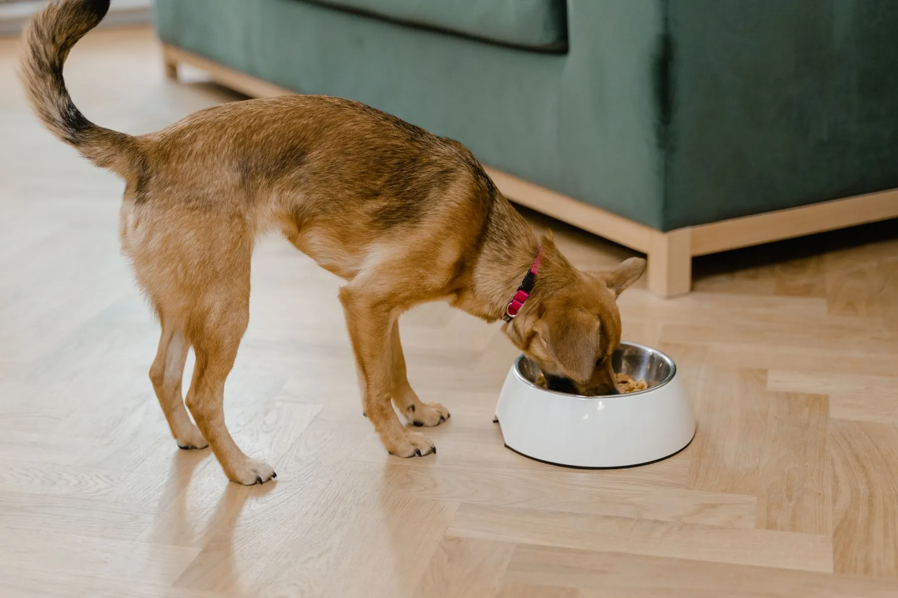
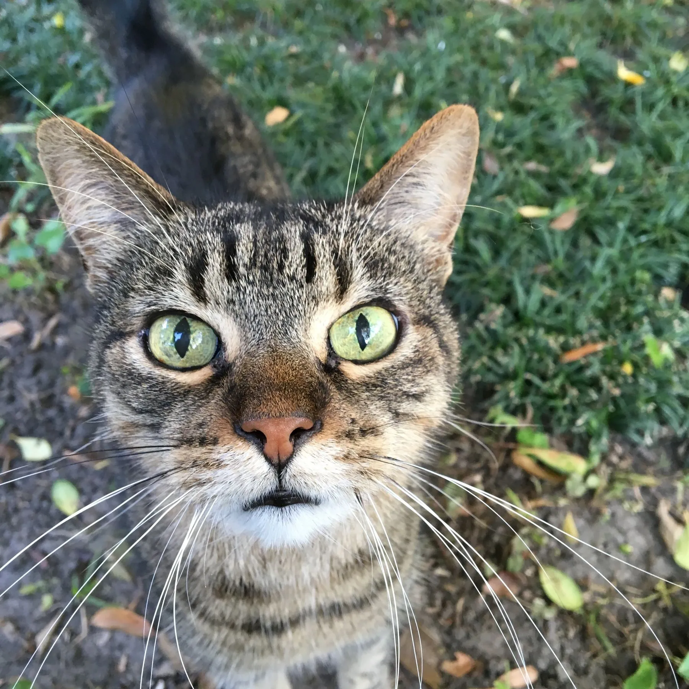
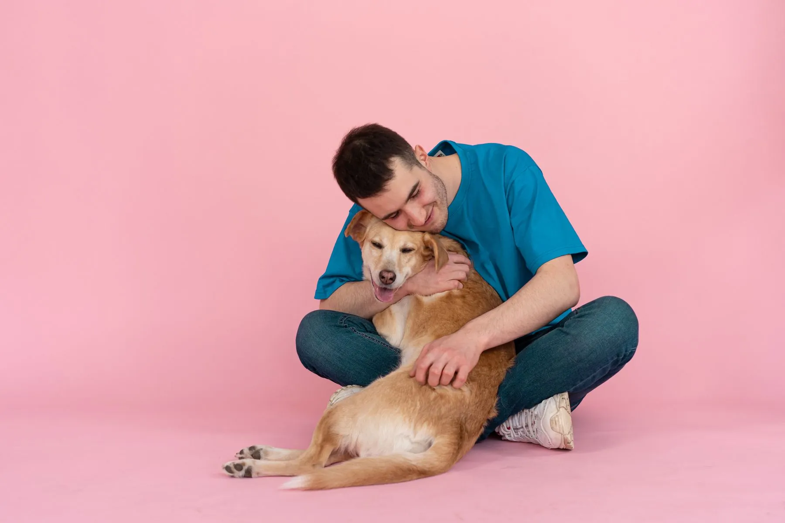

Perros de todas las razas y edades
Del cachorro travieso al senior tranquilo: hay un plato para cada etapa.
0%Seleccionando ingredientes
Alimento natural BARF para perros y gatos
Alimentación natural BARF con proteína animal, vegetales y cereales. Para perros y gatos de todas las razas y edades.
Para ti no es solo una mascota. Es quien te espera en la puerta y quien se sienta a tu lado cuando llega la hora de comer. Por eso su plato merece ingredientes de verdad, preparados con el mismo cariño que tu mesa.
Pollo, pescado, res o cerdo. Es la base de cada receta y el sabor que tu mascota reconoce al instante.
Vegetales de colores que suman fibra, textura y variedad a cada porción.
Una porción de cereales que completa el plato para acompañar su día a día.
Tú solo sirves. Nosotros te orientamos por WhatsApp con sabores, porciones y conservación.
Estoy listo para empezarProteína animal, vegetales y cereales seleccionados para cada receta.
Alimentación natural pensada para acompañar su ritmo de juego y paseo.
Una nutrición pensada para que su pelaje luzca brillante y sano.
Alimento natural para acompañar su fuerza y su bienestar, a cualquier edad.
Los resultados pueden variar en cada mascota. Consulta a tu veterinario antes de cambiar su alimentación.

Del cachorro travieso al senior tranquilo: hay un plato para cada etapa.

Porque los gatos también merecen comida natural.
100%
natural en su alimentación
5
sabores para elegir
Dinos si es perro o gato, su edad y el sabor que te llama la atención.
Te orientamos con sabores y porciones para que el cambio sea cómodo para los dos.
Revisamos disponibilidad, precio y forma de entrega, todo por WhatsApp.
Consérvalo en tu congelador y sirve cuando sea hora de comer.
Hagamos mi primer pedidoSi tu duda no está aquí, con gusto te la resolvemos.
Clic aquí y pregúntanosBARF significa alimentos crudos biológicamente apropiados. Es una forma de alimentar a perros y gatos con ingredientes naturales: proteína animal, vegetales y cereales.
Sí. Tenemos recetas para perros de todas las razas y edades, y una receta especial para gatos.
Tradicional de pollo, pescado, res y cerdo, además de una receta especial para gato. Escríbenos para confirmar disponibilidad.
Se maneja en congelador. Por WhatsApp te explicamos cómo almacenarlo y servirlo en casa.
Lo ideal es hacer el cambio de forma gradual y consultar a tu veterinario, sobre todo si tu mascota tiene alguna condición de salud. Te orientamos con las porciones por WhatsApp.
Escríbenos por WhatsApp o llena el formulario de esta página. Te confirmamos disponibilidad, precio y forma de entrega.
Hablemos
Cuéntanos de tu perro o gato y te ayudamos a elegir el sabor ideal.
Clic aquí y arma su menú
Escríbenos y recibe orientación personalizada para tu mascota.
Conócenos también en Facebook